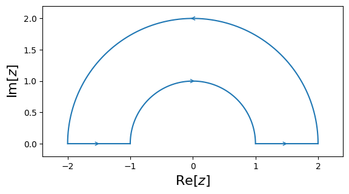

Tutorial¶
Contours¶
cxroots is not a global rootfinder: it can only find roots within a given region of the complex plane. So the first step is to specify this region as the interior of a contour. cxroots allows the user to choose from one of four kinds of contours:
| Circle | Rectangle | Annulus | Annulus Sector |
 |
 |
 |
For example, to define a rectangle whose verticies are the points \(0, i, 2+i, 2\) we would write:
from cxroots import Rectangle
rect = Rectangle([0,2], [0,1])
To check that this is what we want we can plot this contour using matplotlib:
rect.show()
(Source code, png, hires.png, pdf)
{kind=link}
{kind=link}
Rootfinding¶
To find the roots of a function \(f(z)\) within a contour \(C\) we can use the method C.roots(f) or preferably C.roots(f, df) if the derivative df is known.
For example, suppose we want to find all the roots of the function \(f(z) = iz^5 + z\sin(z)\) within a circle of radius 2 and centered at \(z=0\). With cxroots this acomplished with the following short Python script:
from numpy import sin, cos
f = lambda z: 1j*z**5 + z*sin(z) # Define f(z)
df = lambda z: 5j*z**4 + z*cos(z) + sin(z) # Define f'(z)
from cxroots import Circle
C = Circle(0, 2) # Define a circle, centered at 0 and with radius 2
r = C.roots(f, df) # Find the roots of f(z) within the circle
In the first three lines we define the function \(f(z)\) and its derivative \(f'(z)\).
We then define our contour, in this case the circle \(C=\{z\in\mathbb{C}\,|\,|z|=2\}\).
The method C.roots(f, df) on the last line returns a RootResult object which we can use to print the roots and their multiplicities:
print(r)
Multiplicity | Root
------------------------------------------------
1 | -0.861622958732 +0.447663621211i
1 | 0.000000000000 -1.062365701233i
2 | 0.000000000000 +0.000000000000i
1 | 0.861622958732 +0.447663621211i
We can also plot the roots using matplotlib:
r.show()

The RootResult object also contains the roots and multiplicites as lists which can be accessed as:
roots, multiplicities = r
print(roots)
print(multiplicities)
[-1.0623657012328733j, (-0.8616229587319407+0.44766362121071324j), (0.8616229587319407+0.44766362121071324j), (1.9913546050657264e-29+6.638141257918372e-29j)]
[1.0, 1.0, 1.0, 2.0]
or as attributes:
r.roots
[-1.0623657012328733j, (-0.8616229587319407+0.44766362121071324j), (0.8616229587319407+0.44766362121071324j), (1.9913546050657264e-29+6.638141257918372e-29j)]
r.multiplicities
[1.0, 1.0, 1.0, 2.0]